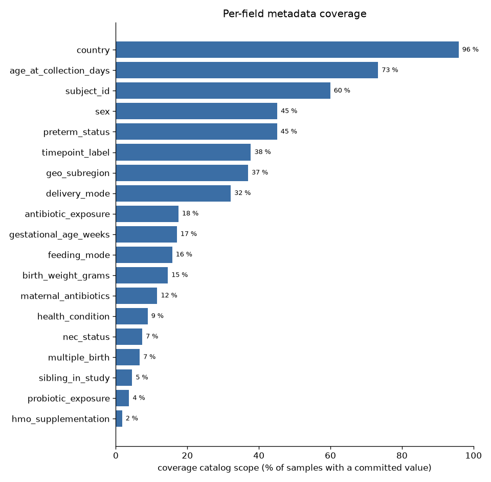

Infant Gut Shotgun-Metagenome Catalog
A curated, evidence-linked catalog of every public shotgun-metagenome study of the human infant gut (0–36 months) in the INSDC archives (ENA/SRA/DDBJ), with per-sample metadata recovered from archive attributes, supplementary tables and papers. Every value carries a verbatim evidence quote, a route (R1–R4) and a confidence.
- Archive metadata: European Nucleotide Archive / INSDC (ENA, SRA, DDBJ) — archive metadata remains under INSDC terms. https://www.ebi.ac.uk/ena/browser/
- Community profiles: Woodcroft, B. J. et al. Comprehensive taxonomic identification of microbial species in metagenomic data using SingleM and Sandpiper. Nature Biotechnology (2025); bulk snapshot Zenodo record 20419175 (CC-BY). https://doi.org/10.5281/zenodo.20419175
- Gold evaluation set: Pasolli, E. et al. Accessible, curated metagenomic data through ExperimentHub (curatedMetagenomicData). Nature Methods 14, 1023–1024 (2017). https://doi.org/10.1038/nmeth.4468
This is release R2026.5 (10 releases so far) — see the release registry and what changed in this release.
Age scope of the 154,356 samples
"Age-scope infant" means age evidence, not body site alone (Reviewer B1); catalog scope = age-scope infant AND body_site_class primary/unknown (72,358 samples) and is the headline denominator. Counts from sample_metadata_wide.age_scope; 61 included studies are mixed-age deposits and carry a banner on their page.
| age_scope | samples | meaning |
|---|---|---|
| infant_evidenced | 67,598 | age ≤ 1,100 d, preterm/GA/DOL evidence on this sample or subject |
| age_unknown_no_study_estimate | 49,556 | no per-sample age and no per-study infant estimate |
| age_unknown_mixed_study | 14,410 | study estimated as mixed-age; no per-sample age |
| adult_flagged | 9,704 | resolved age > 1,100 d (adult_age_flag) |
| study_all_infant | 7,097 | study evidence says all subjects are infants and the triage estimate ≈ n samples |
| non_infant_role | 5,991 | mother / other role |
Find a study, cohort, author or accession
Sample, BioSample and run accessions are looked up in the Sample explorer; studies, cohorts and first authors are matched client-side against a small index; all authors are on the Authors page.
389 included BioProjects with per-study pages, links, coverage and downloads. Cohorts
373 cohort clusters grouping studies and papers that share subjects. Sample explorer
Filter 154,356 samples in the browser; download any slice as CSV or parquet; inspect evidence per value. Fields & data dictionary
Every column, vocabulary, coverage, route mix, confidence tiers. Authors
10,964 author names over 1,264 screened studies; report a missing or mis-triaged study. Screened universe
9,581 candidate studies with status and exclusion reason. Registry: all human shotgun metagenomes
54,410 studies across all body sites and ages with archive-only classification (host, UBERON-anchored body site, life stage, assay); explorer, scope pages, CSV export. Methods & caveats
Enumeration, triage, four evidence routes, audits and gold evaluation. Downloads
The complete data package, individual tables and the getting-started notebook. Contribute
439 studies still lack per-sample metadata; the ranked worklist says what is missing, why, and what would unlock each one.
Field coverage

Fraction of samples with a value for each field, for the body-site infant scope (n = 146,897) and the catalog scope (n = 72,358); age at collection is recoverable for 73% of catalog-scope samples. Regenerated from field_coverage_summary.csv of package 1.7.0. Numbers per field are in Fields.
Route legend
| Route | Evidence | Scope |
|---|---|---|
| R1 | archive sample attribute or sample-name convention | per sample |
| R2 | supplementary table row keyed to the study's own accessions or library names | per sample (or per subject) |
| R3 | statement in the paper text applied to a defined group | group |
| R4 | abstract / ENA description statement (confidence ≤ 0.5) | group |